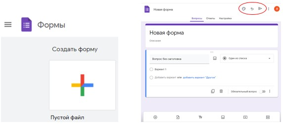
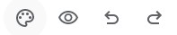
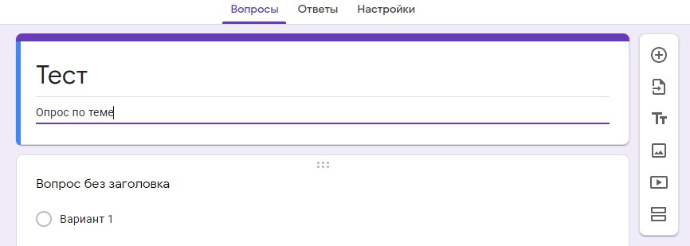
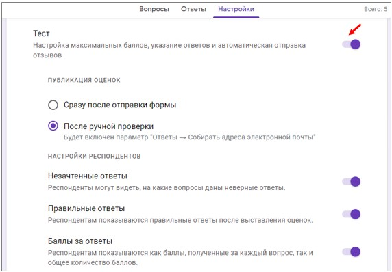
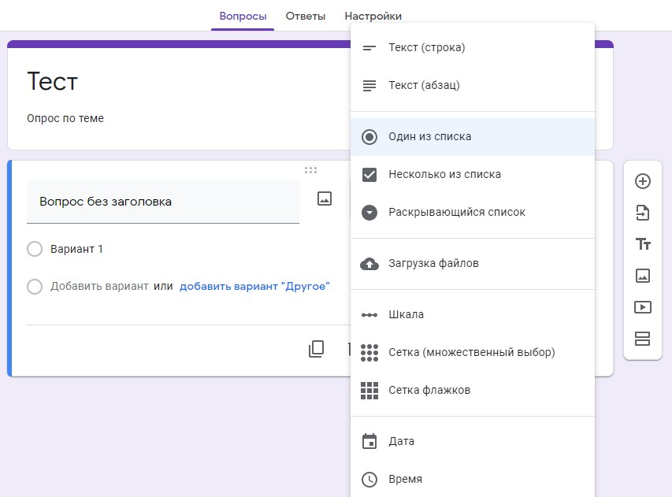
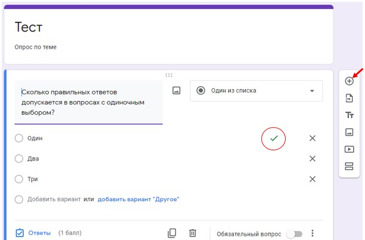
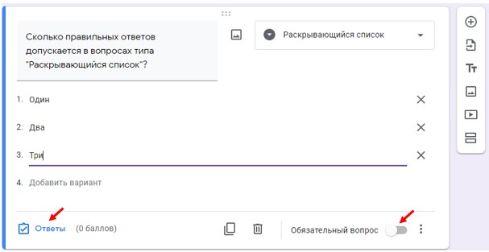
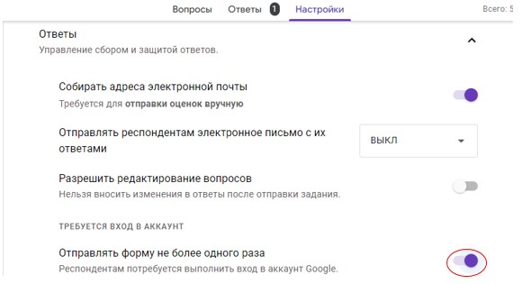
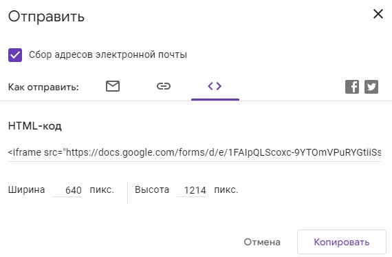

Google Forms qosımshası járdeminde siz testler hám onlayn sorawlar jaratılıwıńız múmkin. Klassta testlerden paydalanıw ushın qatnasıwshlar óz Google akkauntına ıye bolıwı kerek.
12-TEMA
GOOGLE FORMALARI JÁRDEMINDE TESTLER JARATIW
Google Chrome sıyaqlı brauzerdi ashıń, forma jaratıw ushın ózińizdiń akkauntıńız atı menen sistemaǵa kiriń, qosımsha dizimin ashıń.
12.1 -súwret Akkaunt arqalı sistemaǵa kiriw hám qosımsha dizimin ashıp «Формы»dı tańlaw
1. Forma jaratıw ushın " Создать форму " dı tańlawıńız kerek bolǵan ayna ashıladı, reńli plyus ústine basıń hám jańa forma jaratıw ushın bos jay payda boladı.
12.2 -súwret «Формы» hám «Новая форма» aynaları
Joqarı basqarıw paneli sırtqı kórinisti sazlaw imkaniyatın beredi.
12.3 -súwret Joqarı basqarıw paneli sırtqı kórinisti sazlaw instrumentleri " Palitra " belgisi test temasın sazlaw múmkinshiligin beredi (sırtqı kórinisi - reń, fon, shrift tańlaw ), " Kóz" belgisi tayın formanı qálegen basqıshda, qatnasıwshı ushın ámeldegi bolǵan kórinisti kóriw imkaniyatın beredi. " Keyinge" hám " Aldınga" strelkaları processdagi aqırǵı ámellerdi bıykarlaw hám artqa qaytırıw imkaniyatın beredi.
Temanı sazlaw ushın palitra belgisin saylań, ashılǵan aynada bas bet ushın súwretti saylań (siz test atınan joqarıda súwret alasız ), tema reńi, fon reńi, shrift usılın tańlawıńız múmkin. Ózgerisler avtomatikalıq túrde saqlanadı.
12.4-súwret Temanı sazlaw ushın palitra belgisinen paydalanıw
Forma atın kirgiziw ushın “ Новая форма ” tuymesin basıń hám forma atın jazıń, mısalı, «Тест», bayanlamada temanı túsindiriwińiz yamasa basqa test yaki sorawlar haqqında maǵlıwmat beriwińiz , siz arnawlı bir testtiń qásiyetlerin kórsetiwińiz, máslahát hám túsindiriwler beriwińiz múmkin. Ózgerislerdi saqlaw shárt emes, sebebi barlıq ózgerisler avtomat túrde saqlanadı.
12.5-súwret Formanıń atı «Тест»
4.Forma atın bergenińizden keyin, siz sorawlardı qáliplestiriwge, juwaplar dizimin usınıwǵa ótiwińiz múmkin. Test dúzilgen táǵdirde tuwrı yamasa tuwrı emes juwaplar kórsetiledi. Soraw hám juwaplardı aldınan tayarlanıwı kerek. Nátiyjelerdi bahalaw múmkinshiligine ıye bolıw ushın test jaratıwdı tańlaw, bunı " Настройки " jarlıǵında amelge asırıwǵa boladı - " Настройки " jarlıǵına ótiń hám " Тест " parametrin qosıń, bul sizge test jaratıw processinde tuwrı juwaplardı kórsetiwińiz hám keyin olardı tekseriwińiz múmkinshiligin beredi.
12.6-súwret «Настройка» jarlıǵına ótip «Тест» parametrin qosıw
Sonıń menen birge, bul jarlıqta siz test qatnasıwshıları tárepinen berilgen nadurıs hám tuwrı juwaplar hám tóplanǵan ballar sanın kórsetiwdi sazlawıńız múmkin.
Eger siz test sorawlarına juwap beretuǵın qatnasıwshılardıń elektron pochta mánzillerin toplamaqshı bolsańız, ol halda " Настройки " jarlıǵında Публикация оценок/После ручной проверки parametrlerin biykarlawıńız kerek. Test atınan keyin «Электронная почта» maydanı payda boladı, bunda qatnasıwshı óz elektron pochta adresin jazıwı kerek.
12.7-súwret Qatnasıwshılar óz elektron pochta adresin kirgiziw ushın «Электронная почта» maydanı
Test jaratıw ústinde islewdi dawam ettiriw ushın , " Вопросы " jarlıǵına qaytamız.
5.Test tapsırmaların jaratıwda hár túrlı túrdegi sorawlardan paydalanıw múmkin, mısalı, bir tuwrı juwaplı (единичный выбор), bir neshe tuwrı juwaplı sorawlar (множественный выбор) jaratıw múmkin.
Basqa variantlardan paydalanıw múmkin - qısqa tekstli juwap, tolıq tekstli juwap, usınıs etilgen variantlardan tańlaw (из списка), siz juwap retinde málim bir fayldı júklewge ruxsat beriwińiz múmkin, onı shkala boyınsha bahalawıńız (шкала ), siz qatardan bir varianttı tańlawıńız múmkin (сетка ), qatardan bir yamasa bir neshe varianttı tańlawıńız múmkin (сетка флажков), sáne, waqıt yamasa dawam etiw waqtın tańlawıńız múmkin.
12.8-súwret Sorawlar túrlerin tańlaw
Tómendegi túrdegi sorawlar usınıs etiledi:
12.9-súwret Usınıs etiletuǵun sorawlar túrleri
6. " Один из списка " túrindegi tapsırmanı jaratamız, yaǵnıy sorawǵa juwap retinde bir tuwrı juwaptı tańlaw kerek boladı. " Вопрос без заголовка " maydanında sorawdıń dúzilisin beremiz keyinshelik juwaplar variantların toltıramız, radiotúymeshelerine qarama qarsı qarata jaylastırıp.Juwaplar variantların kóbeytiw ushın «Добавить вариант» basiw jetkilikli.Ádette soraw ushın 3-5 variant beriledi, olar deskriptorlar dep ataladı.
12.10-súwret " Вопрос без заголовка " maydanında sorawdıń dúzilisi beriledi
Eger «Тест» parametri qosılǵan bolsa, ol jaǵdayda siz tuwrı juwaplardı belgilewińiz múmkin, eger bul parametr qosılmaǵan bolsa, onda tek sorawnama boladı.
12.11-súwret «Ответы» hám «Обязательный вопрос» parametri
Tuwrı juwaptı kórsetiw ushın «Ответы» tuymesin basıw kerek, bunda tuwrı juwaplardı kórsetiw múmkinshiligi payda boladı, tuwrı juwaptı belgilew kerek. Sonıń menen birge, bul jerde sorawǵa tuwrı juwap ushın alıwıńız múmkin bolǵan ball muǵdarın kórsetiwińiz múmkin. «Обязательный вопрос» parametri qosılsa soraw zárúrli bolıp tabıladı. Islengen háreketlerdi tastıyıqlaw ushın «Готово» tuymesin basıwıńız kerek.
12.12-súwret Sorawǵa tuwrı juwap hám ol ushın alıwıńız múmkin bolǵan ball muǵdarın kórsetiw
Soraw jaratılıwı tastıyıqlanǵannan keyin, tuwrı juwap qarsısında " belgi" payda boladı.
12.13-súwret Tuwrı juwap qarsısındaǵı " belgi"
7. Náwbettegi tapsırmanı jaratıw ushın oń táreptegi paneldegi buyrıǵın basıw kerek, jańa tayarlanǵan soraw aynada qaladı hám keyingi tapsırmanı jaratıw ushın tayarlıq payda boladı.
12.14-súwret Keyingi tapsırmanı jaratıw ushın tayarlıq
«Раскрывающийся список» túrindegi tapsırmanı saylap, soraw tekstin hám 3 juwaptıń 3 variantın kiritemiz.
12.15-súwret Soraw tekstin hám 3 juwaptıń 3 variantın kiritiw
Tuwrı juwaptı belgilew ushın shep tómengi bólektegi «Ответы» maydanına ótiń, juwap ushın balllardı anıqlań, soraw waqtında soraw mudami kórsetiliwi ushın «Обязательный вопрос» parametrin qosıń. Islengen háreketlerdi tastıyıqlaw ushın «Готово» tuymesin basıwıńız kerek.
12.16-súwret Tuwrı juwaptı belgilew, «Ответы» maydanına balldı kiritiw hám «Обязательный вопрос» parametrin qosıw
8. «Шкала» soraw shablonınan paydalanıp taǵı bir tapsırma jaratamız. Biz oń tárep degi paneldegi basamız, keyingi tapsırmanı jaratıw ushın tayarlıq payda boladı, tapsırma túrin saylań «Шкала» túrin saylań, «Обязательный вопрос» parametrin qosıń, tapsırma tekstin kiritiń, shkaladaǵı baslanıwı hám juwmaqlanıw mánisin anıqlań. Siz 0 yamasa 1 menen baslawıńız múmkin, 2 den 10 ǵa shekem bolǵan nomer menen juwmaqlastırıwıńız múmkin, 1 den 5 ke shekem tańlawıńız múmkin. Keyin tuwrı juwaptıń ma`nisin kiritiń, biziń jaǵdaya bul " 3" hám tapsırmanı jaratıwdı juwmaqlaw ushın «Готово»" tuymesin basıń.
12.17-súwret Tapsırmanı jaratıwdı juwmaqlaw ushın «Готово»" tuymesi
«Шкала» juwap túrinen paydalanǵan halda tapsırma jaratqannan keyin, ol tómendegishe kórinside boladı:
12.18-súwret Tapsırma tekstinen keyin jaylasqan juldızsha
Tapsırma tekstinen keyin jaylasqan juldızshalarǵa itibar beriń, olar ol sorawdıń aqırında jaylasqan, «Обязательный вопрос» statusına iye.Eger soraw zárúr bolmasa bunday bolmasa onda bunday juldızsha bolmaydı.
Tekst túrindegijuwap beriw variantlarınan (deskriptorlar) tısqarı mısalı, grafikalıq, video fayllardan paydalansańız boladı.
Soraw yamasa juwaptı ózgertiw ushın ústine onıń ústine basıw jetkilikli.
9. Endigi másele-formanı sazlaw.
Formanı qayta isletiwdi qadaǵan etiw (yaǵnıy, tek bir ret juwap beriwge ruxsat beriledi), tapsırma orınlaw processinde juwaplardı redaktorlawǵa ruxsat beriw yamasa qadaǵan etiw, oqıwshılarǵa juwaplar dizimin kóriwge múmkinshilik beriwdi sazlaw múmkin.
Qayta paydalanıwdı qadaǵan etiw (yaǵnıy, juwap tek bir ret beriwi múmkin): «Настройки» jarlıǵına ótiń, «Отправлять форму не более одного раза» buyrıǵın saylań, giltti qosıń.

12.19-súwret «Настройки» jarlıǵındaǵı, «Отправлять форму не более одного раза» buyrıǵı
Jiberiwden aldın juwaplardı ózgertiwge ruxsat :
«Настройки»jarlıǵına ótiń, «Разрешить редактирование вопросов» buyrıǵın saylań (tiykarınan " sorawlar" sózi ornına " juwaplar" sózi bolıwı kerek, bul qáte barlıq versiyalarda ushıramaydı) giltti qosıń.
12.20-súwret Test tapsırıwshılar tárepinen berilgen juwaplardı kóriw ushın ruxsat
Test tapsırıwshılar tárepinen berilgen juwaplardı kóriw ushın ruxsat :
«Настройки»jarlıǵına ótiń, «Презентация» buyrıǵın saylań, keyin «Посмотреть ответы» opsiyasın saylań hám giltti ornatıń. Sonıń menen birge, sazlamalar bólimide «Перемешать вопросы» opsiyasınan paydalanıwıńız múmkin, sonda barlıq oqıwshılar ushın bir test sorawlar izbe-izligi menen parıqlanadı.
Sonıń menen birge, oqıwshılar tapsırmanı orınlap, juwabın jibergeninen keyin olardıń alatuǵın tekstin «Настройки» jarlıǵında ózgertiwge boladı.
Indemesek «Ответ записан» ornatıladı, bul sózlerdi ózgertiwge boladı. Buniń ushın «Изменить» buyrıǵın bassa aynasha payda boladı, onıń ishine kerekli bolǵan tekstti kiritip hám saqlaw zárúr.
12.21-súwret «Изменить» buyrıǵın basıw arqalı payda bolǵan aynasha
10. Juwmaqlawshı basqısh -testti oqıwshılarǵa orınlaw ushın tapsırıw. Bunı ámelge asırıw ushın siz sınaqtan ótiwshi shaxsqa test adresin tapsırıwıńız jáne onı orınlaw huqıqın beriwińiz kerek. Biz oqıwshılardıń jeke akkauntlarınan paydalanamız hám siltemege iye bolǵan hár bir oqıwshıǵa testke kiriw ruxsatın beremiz. Sınaqtı jaratqannan keyin, bizge silteme kerek, bul siltemenı elektron pochta arqalı jiberiw, Google klasına tapsırma qoyıw, Internet degi betke qoyıw, mısalı, social tarmaqqa qoyıw múmkin. Bul háreketlerdiń barlıǵı bir «Отправка формы»túsinigi menen belgilenedi.
11. Formanı ashamız (jaratqannan keyin, forma avtomatikalıq túrde Google Drive-de jaylasadı ) hám joqarı oń múyeshdegi «Отправить» tuymesin basamız.
12.22-súwret Joqarı oń múyeshdegi «Отправить» tuymesin
Bir qatar sazlawlardı ámelge asırıwıńız kerek bolǵan ayna ashıladı. Birinshiden, jıberiw usılı saylanadı - ush usıl usınıs etiledi: elektron pochta arqalı, siltemenı usınıw hám qálegen saytqa jaylastırıw arqalı.
- Eger siz elektron pochta arqalını tańlasanız, tómende test jiberiletuǵın elektron pochta mánzillerin kórsetiwińiz kerek. Elektron pochta mánzilleri útir menen ajıratılǵan.
- Siltemenı jaratıw ushın tiyisli belgini basıwıńız hám siltemenı nusqalap alıwıńız kerek.
- Saytqa siltemenı jaylastırıw ushın «Встроить» buyrıǵın saylań hám koddan nusqa alın.
12.23-súwret Elektron pochta arqalı oqıwshılarǵa tapsırmanı jiberiw
Eger siz elektron pochta arqalı jiberiwdi tańlasanız, mánzillerdi dizimge kirgizgenińizden keyin, «Отправить» tuymesin basıwıńız kerek, adresi kórsetilgen oqıwshılar tapsırmanı pochta arqalı aladı, orınlanǵannan keyin juwaplar oqıtıwshınıń Google diskında payda boladı.
Eger biz mánziller dizimin kórsetiwdi qálemesek, ol halda siltemenı jiberiwdi tańlawımız múmkin, onıń ushın siz siltemenı basıwıńız kerek, «Копировать» buyrıǵın basıw arqalı siltemenı nusqalap alıwıńız kerek bolǵan ayna ashıladı.
12.24-súwret Saytta testke siltemenı jaylastırıw ushın «Встроить» buyrıǵı
Saytta testke siltemenı jaylastırıw ushın «Встроить» buyrıǵınan paydalanamız, ayna ashıladı :
12.25-súwret HTML kodtı («Копировать» buyrıǵı ) nusqa alıp keyin Internetdegi betke jaylastırıw
Bunda HTML kod jaylasqanın óz ishine aladı, onı («Копировать» buyrıǵı ), nusqa alıp keyin Internetdegi betke jaylastırıladı.
Oqıwshılar testti orınlaǵannan keyin, test nátiyjelerin «Ответы» jarlıǵında kóriw múmkin. Siz nátiyjeni tańlawıńız hám diagramma túrinde kóriwińiz múmkin, siz «Отдельный пользователь» di tańlawıńız hám hár bir oqıwshı ushın kóriwińiz múmkin. Kóriwdiń eń qolaylı hám eń operativ usılı bul Google таблицы-den paydalanıw bolıp tabıladı. Kesteni birinshi ret jaratıw ushın siz belgisine basıwıńız hám «Сохранять ответы» buyrıǵın tańlawıńız kerek.
12.26-súwret Google таблицы-den paydalanıp juwaptı kóriw
Google Drive-de hár bir oqıwshı ushın test nátiyjelerin óz ishine alǵan keste dúziledi. Kesteni bir ret jaratıw jetkilikli, keyin oǵan «Ответы» jarlıǵına tiyisli belgisin basıw arqalı kiriwińiz múmkin.
Mısalı, oqıwshılardıń juwapları kestesi tómendegishe kórinedi, bul jerde hár bir qatar juwaptıń versiyası bolıp tabıladı:
12.27-súwret Oqıwshılardıń juwaplar kestesi
Kestede studenttiń qanday juwap bergeni anıq kórsetilgen. Student tapsırmanı orınlawdan aldın kórsetken elektron pochta adresi arqalı anıqlanadı. Eger siz juwaptı tuwrılawdı qadaǵan etken bolsańız, onda hár sapar tek bir versiya boladı. Biz test jaratıwdıń eń ápiwayı usılın kórip shıqtıq.
Soraw hám tapsırmalar
1. Google Forms bul ne?
2. Klassta testlerden paydalanıw ushın qatnasıwshlar nege ıye bolıwı kerek?
3. « Palitra» belgisi qanday múmkinshiliklerdi beredi?
4. « Kóz» belgisi qanday múmkinshiliklerdi beredi?
5. Forma atın kirgiziw ushın qaysı tuymeden paydalanamız?
6. Google Drive-de hár bir oqıwshı ushın test nátiyjelerin qalay aladı?